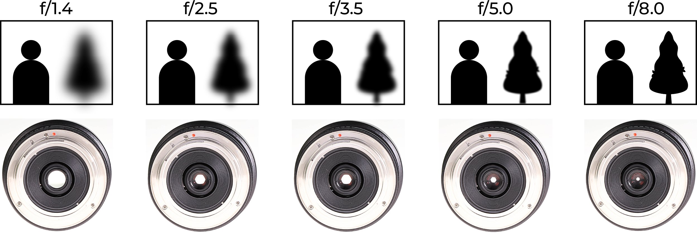

Grundlagen Tutorial

4 / 4
Blende
Die Blende wird mit einem kleinen “f” gekennzeichnet und geht bei einem durchschnittlichen Objektiv von f 3,5 bis f 18. Bei einem sehr guten von f 1.8 bis f 18.
Die Blende eines Objektivs ist die Öffnung, durch die das Licht auf den Sensor gelangt. Je größer diese Öffnung ist, desto mehr Licht kann den Kamerasensor erreichen, was sich wiederum auf die Belichtung eines Bildes auswirkt.
Je kleiner größer die Öffnung ist, desto kleiner ist allerdings auch der “Fokusbereich”, also der Bereich der scharf dargestellt wird. Das heißt übersetzt, jekleiner die Blende ist, desto größer ist die Öffnung und desto mehr Licht fällt auf den Sensor, aber der Schärfebereich wird kleiner.